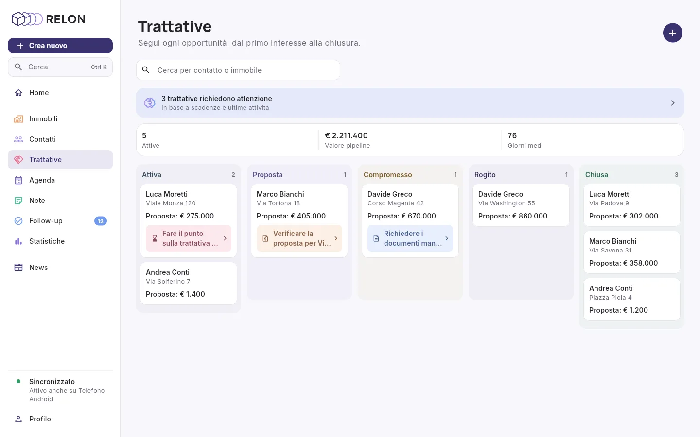

Ogni immobile.
Ogni cliente.
In tasca.
Relon riunisce immobili, documenti, contatti, trattative, agenda e note in un'unica app pensata per chi lavora sul campo. E ti ricorda quello che rischi di dimenticare.
Tutto il lavoro dell'agente, in un solo posto.
Quello che inserisci in una sezione alimenta le altre. Tocca una sezione per vedere a cosa è collegata e come funziona.
Tutto il sistema
- Note → ContattiRelon riconosce il contatto nella nota e la collega alla sua scheda.
- Note → ImmobiliRiconosce anche l'immobile, e la nota compare nella sua scheda.
- Note → Follow-upUna data scritta nella nota diventa un follow-up da confermare.
- Immobili → TrattativeOgni trattativa nasce su un immobile.
- Contatti → TrattativeAcquirente e venditore sono tuoi contatti.
- Immobili → PrenotazioniOgni immobile ha il suo link per prenotare le visite.
- Prenotazioni → AgendaLa visita prenotata dal cliente arriva in agenda.
- Prenotazioni → ContattiSe telefono o email corrispondono, la visita è collegata al contatto.
- Trattative → AgendaLe scadenze della trattativa compaiono nel calendario.
- Immobili → Follow-upIncarico in scadenza o documenti mancanti generano un suggerimento.
- Trattative → Follow-upProposta in scadenza, trattativa ferma, visita senza riscontro, documenti del compromesso.
- Contatti → Follow-upUn contatto caldo o tiepido che non senti da troppo tempo.
- Follow-up → AgendaDal suggerimento crei un task o un appuntamento.
- Immobili → HomeIl numero degli immobili in portafoglio.
- Contatti → HomeIl numero dei contatti.
- Trattative → HomeLe trattative in corso.
- Agenda → HomeL'agenda di oggi.
- Note → HomeLe ultime note.
- Follow-up → HomeI suggerimenti da valutare.
La giornata, appena apri l'app.
Numeri del portafoglio, agenda di oggi, ultime note e follow-up da valutare in una sola schermata. Da lì aggiungi quello che succede e ritrovi tutto.
Un tocco sul pulsante +, ed è già nella sezione giusta.
Cosa puoi creareOgni immobile, dall'acquisizione alla chiusura.
Crei la scheda, completi i documenti e Relon tiene d'occhio l'incarico. Filtri per vendita, affitto e stato.
Una checklist per la vendita e una per l'affitto.
L'avviso arriva quando mancano 30 giorni alla fine del mandato.
Dalla scheda partono ancheTutte le persone con cui lavori.
Acquirenti, proprietari, lead, notai, commercialisti: ogni contatto entra una volta sola, con il suo consenso, e da lì sai sempre quando l'hai sentito.
Obbligatorio al primo inserimento, con data e ora.
Caldo dopo 7 giorni di silenzio, tiepido dopo 21: Relon te lo ricorda.
Dal primo interesse al rogito.
Cinque fasi, con le scadenze e i documenti che servono lungo la strada. In testa trovi quante trattative sono aperte, il valore della pipeline e i giorni medi.
In ordine di tempo, per sapere sempre cosa è successo.
Documenti del compromessoScrivi una volta. Relon smista.
Scrivi o detta una nota come ti viene. Relon riconosce contatto, immobile e data, e la collega alle schede giuste.
Per quando sei in macchina o in visita.
Sulla notaLo confermi e diventa un impegno in agenda.
Cosa fare oggi, e come sta andando.
Quello che nasce nelle altre sezioni finisce in un unico calendario. Le statistiche mostrano i numeri del mese e cosa richiede attenzione.
Quello che rischia di essere dimenticato.
Relon controlla note, visite, mandati, proposte e documenti, e ti propone la prossima azione spiegando sempre il perché.
Guarda come funziona ↓Tu scegli gli orari. Il cliente prenota da solo.
Ogni immobile ha il suo link: il cliente sceglie un orario libero e la visita arriva nella tua agenda.
Guarda come funziona ↓Com'è fatta l'app.


In ufficio sullo schermo grande, fuori sul telefono.
La stessa app, con barra laterale, schede affiancate e trattative da trascinare da una fase all'altra. Quello che salvi su un dispositivo compare da solo sugli altri.

Mercato immobiliare
Le notizie da Il Sole 24 Ore, Casa&Clima e Wall Street Italia, da salvare e condividere.
Email o Google
Entri con email e password oppure con il tuo account Google.
Cerca con Ctrl+K
Su computer trovi contatti, immobili, trattative e note da qualsiasi schermata.
Italiano e inglese
Cambi lingua dalle impostazioni quando vuoi.
Dal segnale all'agenda, senza perdere nessuno per strada.
Relon rilegge da solo quello che hai già inserito: note, visite, mandati, proposte, trattative, contatti e documenti. Quando trova qualcosa che rischia di sfuggire, te lo propone. Scegli un segnale per vedere il suggerimento.
Nella nota del 6 ottobre hai scritto: «ricontattarlo venerdì pomeriggio». Non è ancora in agenda.
Chiama o scrivi
Il messaggio è già pronto per WhatsApp, SMS o email: lo modifichi e lo invii tu. Nulla parte in automatico.
Crea task o appuntamento
Finisce in agenda, collegato al suggerimento da cui è nato, e il follow-up esce dalla coda.
Rimanda
A domani, tra 3 giorni o tra una settimana. Poi torna tra i suggerimenti.
Ignora
Sparisce. Se la situazione cambia, per esempio con una nuova scadenza o un nuovo silenzio, Relon te lo ripropone.
Tu scegli gli orari. Il cliente prenota da solo.
Ogni immobile ha il suo link di prenotazione. Il cliente lo apre dal telefono, senza app e senza registrarsi, e la visita arriva nella tua agenda. Prova a scegliere un orario.
Scegli il giorno e l'orario che preferisci. La visita dura 30 minuti.
venerdì 16 ottobreSolo quelli liberi
Il link mostra i prossimi 14 giorni. Gli orari in cui hai già un appuntamento in agenda non compaiono.
Niente doppie prenotazioni
Due clienti non possono prendere lo stesso orario: il secondo vede che non è più disponibile.
Riconosce chi conosci già
Se telefono o email corrispondono a un tuo contatto, la visita viene collegata alla sua scheda.
Link attivo, finché vuoi
Lo disattivi dalla scheda dell'immobile. Se colleghi Google Calendar, le visite vengono copiate anche lì.
Il tuo portafoglio, a colpo d'occhio.
Ogni agente vede e gestisce solo i propri clienti, immobili e trattative. Scadenze dei mandati e documenti mancanti emergono da soli.
Scarica Relon.
In arrivo per iPhone e Android.